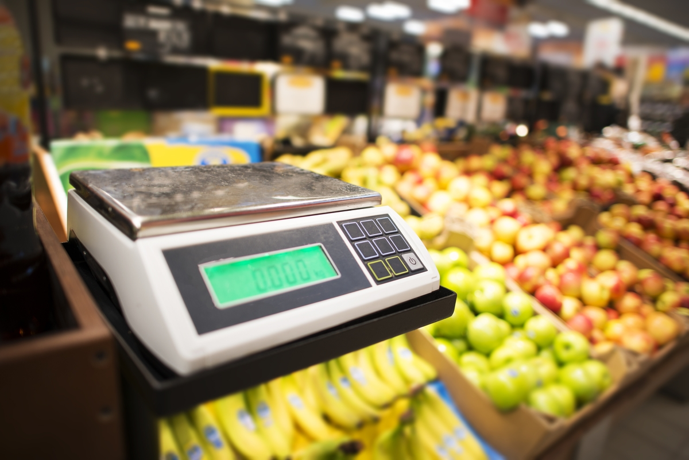

Variedade de alimentos
O segmento reúne diferentes categorias de produtos alimentícios para as necessidades cotidianas.
Uma empresa de Camaçari, Bahia, dedicada ao comércio varejista de produtos alimentícios em geral.
A 63.085.631 Simara Mendes Pereira é uma empresa registrada em Camaçari, no estado da Bahia, com atividade principal no comércio varejista de produtos alimentícios em geral ou especializado em produtos alimentícios não especificados anteriormente.
Nosso compromisso é apresentar informações claras sobre a empresa e facilitar o contato com clientes, fornecedores e parceiros.
Imagens ilustrativas que representam o segmento de comércio de produtos alimentícios.
O segmento reúne diferentes categorias de produtos alimentícios para as necessidades cotidianas.
Informações acessíveis ajudam clientes e parceiros a encontrar os canais de contato da empresa.

Atividade comercial voltada ao varejo de produtos alimentícios em geral.
As fotografias desta página são ilustrativas e não representam necessariamente o estoque, a estrutura física ou a disponibilidade atual de produtos da empresa.
Utilize nossos canais oficiais de contato.